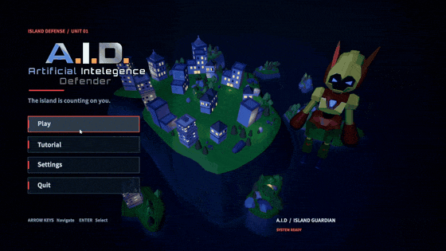

Delvin Susilo · Game Design Case Study
A.I.D — Artificial Intelligence Defender

Gameplay

Game Overview
A.I.D is a boss encounter game where players defend a city against Martin, managing their energy and support drone while responding to changing attack phases.
The player character cannot die. Instead, the challenge centers on protecting buildings and meeting encounter objectives. Losing 15 buildings or failing the gravity-phase deadline results in defeat.
Core Gameplay Loop
Respond to Martin’s attacks → Manage energy and drone support → Counter phase mechanics → Create damage opportunities → Defeat Martin before the city is lost.
The encounter moves through UFO, missile, and gravity phases. Players must adapt to each phase while balancing offensive actions, energy availability, and the condition of the city.
My Contributions
I shaped and refined gameplay rules during development and subsequent polishing, including player survivability, defeat conditions, energy management, and the support drone’s behavior. I established that the player character should remain invulnerable, with failure tied to city destruction and encounter objectives.
I directed refinements to the relationship between the player and the drone, including toggle-based resupply and recharge controls. I also specified that energy should not regenerate passively, keeping the drone central to resource management.
For the boss encounter, I contributed to the refinement of phase interactions and proposed rewarding redirected missiles by shortening Martin’s shield duration.
I also directed HUD and presentation improvements, prioritizing energy visibility, boss health, building losses, and drone-state feedback. My polish work extended to the nighttime visual direction, combat effects, menu presentation, and replay flow.
During the polishing stage, I used AI-assisted coding support to implement and troubleshoot changes, while providing design requirements and feedback.
Design Decisions — Protecting the City
I established a distinction between player survival and mission success: the character cannot die, but the player can still lose.
This places the consequences of mistakes on the city and encounter objectives. The 15-building destruction limit and gravity-phase deadline give players explicit failure conditions without relying on a conventional player health system.
Design Decisions — Energy & Drone Support
I specified an energy system that depends on active drone support rather than passive regeneration.
Players toggle energy resupply with F and the drone’s self-recharge with C. This creates a resource-management decision alongside combat: when to request support and when to allow the drone to recover.
During polishing, we refined transfer and recharge behavior, including what happens when the drone is empty and how requests are canceled or queued. Overheat recovery also restores the player’s energy, making its behavior another part of the resource system to consider.
Design Decisions — Boss Interactions
The encounter combines shield protection, weakpoints, and phase-specific threats. During polishing, we addressed a shield issue that allowed close-range attacks to damage Martin while protection was active.
I also proposed that redirecting a missile back at Martin should reduce his remaining shield duration, giving players an offensive reward for responding to an incoming threat.
Missile timeout behavior was refined so expired missiles would release a riding player safely and allow the encounter to continue.
HUD & Visual Polish
I directed HUD improvements to make the encounter’s key information easier to follow:
- Energy percentage and overheat feedback to communicate resource availability.
- Martin’s health to show progress toward victory.
- Building destruction count to communicate proximity to defeat.
- Drone status and F/C prompts to clarify support options.
For the visual pass, I requested a nighttime city setting, illuminated windows, and distinct colors for combat elements. Further iterations adjusted lighting, projectile effects, and boss accents.
I also guided the main menu toward a view of the player and game environment, and requested a Play Again option to support repeated attempts.
Post-Jam Iteration
The original game jam build was followed by additional polishing. This work focused on clarifying rules, resolving encounter issues, improving feedback, and making repeated play more consistent.
The changes were developed iteratively through design feedback and AI-assisted implementation. They represent a gameplay and usability polish pass; their effect on difficulty and player understanding still needs broader playtesting.